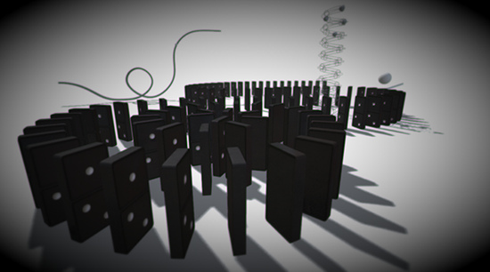

Vignetting (and Chromatic Aberration)
The Vignetting image effect introduces darkening, blur and chromatic aberration (spectral color separation) at the edges and corners of the image. This is usually used to simulate a view through a camera lens but can also be used to create abstract effects.

Example of Vignetting and chromatic Aberration. Notice how the screen corners darken and color separation (aberration) creates purple and slightly green color fringing.
As with the other image effects, this effect is only available in Unity Pro and you must have the Pro Standard Assets installed before it becomes available.
Properties
| Vignetting | The degree of darkening applied to the screen edges and corners. Choose 0 to disable this feature and save on performance. |
| Blurred Corners | The amount of blur that is added to the screen corners. Choose 0 to disable this feature and save on performance. |
| Blur Distance | The blur filter sample distance used when blurring corners. |
| Aberration Mode | Advanced tries to model more aberration effects (the constant axial aberration existant on the entire image plane) while Simple only models tangential aberration (limited to corners). |
| Strength | Overall aberration intensity (not to confuse with color offset distance), defaults to 1.0. |
| Tangential Aberration | The degree of tangential chromatic aberration: Uniform on the entire image plane. |
| Axial Aberration | The degree of axial chromatic aberration: Scales with smaller distance to the image plane's corners. |
| Contrast Dependency | The bigger this value, the more contrast is needed for the aberration to trigger. Higher values are more realistic (in this case, an HDR input is recommended). |
Advanced Mode
Advanced mode is more expensive but offers a more realistic implementation of Chromatic Aberration.

The Advanced mode offers great control over our model of chromatic aberration -- also known as green or purple color fringing -- a common phenomenon in photography (also see image below).
The Advanced mode offers great control over our model of chromatic aberration -- also known as green or purple color fringing -- a common phenomenon in photography (also see image below).

Closeup view of color fringing. Note how around areas of great contrast purple and green shimmers seem to appear. This effect depends depends on the kind of camera or lens system being used. The effect is based on the fact that different wavelengths will be projected on different focal planes.
Hardware support
This effect requires a graphics card with pixel shaders (2.0) or OpenGL ES 2.0. PC: NVIDIA cards since 2003 (GeForce FX), AMD cards since 2004 (Radeon 9500), Intel cards since 2005 (GMA 900); Mobile: OpenGL ES 2.0; Consoles: Xbox 360, PS3.
All image effects automatically disable themselves when they can not run on end-users graphics card.
Page last updated: 2012-11-16